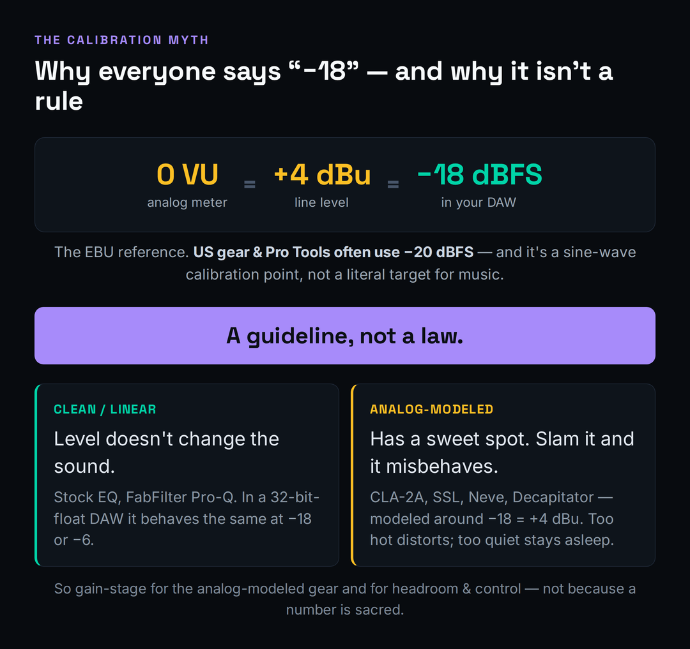
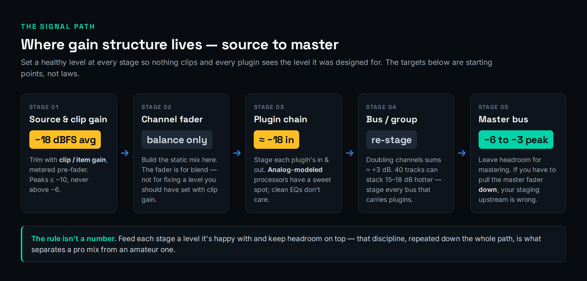
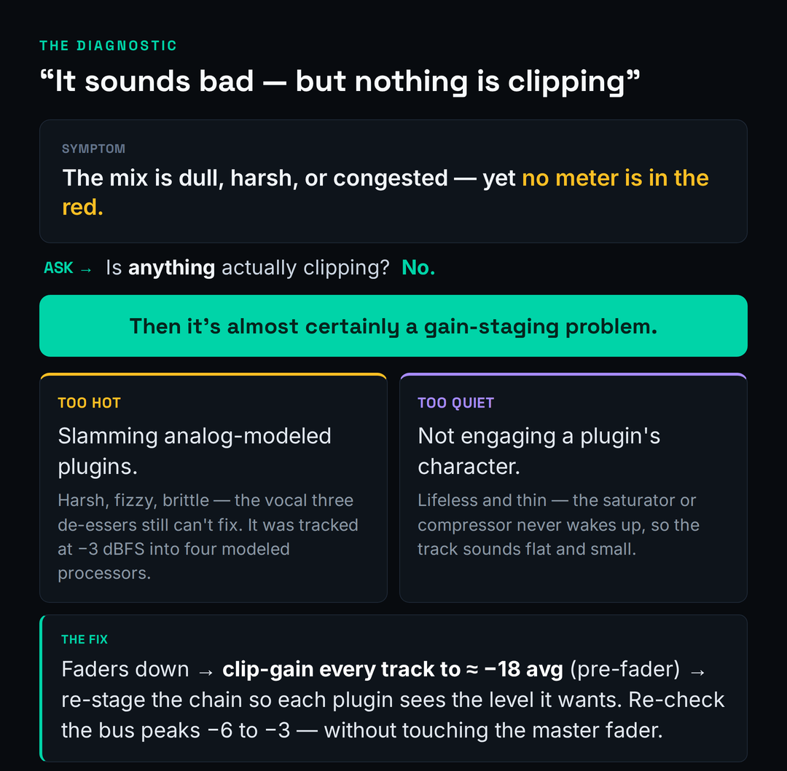

There is a moment every self-taught producer hits eventually. The mix isn’t clipping — you checked, nothing is in the red — and yet it sounds small, harsh, and brittle next to a commercial reference. You reach for another EQ, another de-esser, a fresh compressor, and each one makes it worse in a slightly different way. The problem isn’t your plugins and it isn’t your ears. It’s the levels feeding all of them. That invisible discipline — setting a healthy level at every point in your signal path — is gain staging, and it is the single most common root cause of mixes that sound “off” for no obvious reason.
This guide is the procedure: the actual stage-by-stage workflow, the myth that’s holding most people back, and the diagnostic that tells you when a bad-sounding mix is really a staging problem in disguise. If you want the definition first — what gain staging is and why it exists at all — read what is gain staging, and for the buffer-before-the-ceiling concept that staging protects, read mixing headroom explained. We won’t re-teach either here. This is the how, the why-it-matters-less-than-you-think, and the fix.
Gain staging means giving every stage of your signal path a healthy level — loud enough to clear the noise floor, with enough headroom that nothing clips and your plugins behave. The workflow: pull every fader down, clip-gain each track to roughly −18 dBFS average (peaks around −10, never above −6) using pre-fader metering, build a static balance with the faders, stage each plugin’s in and out, and keep the mix bus peaking around −6 to −3 dBFS before mastering. The “−18” number isn’t magic — it’s the digital match for analog 0 VU, and it only really matters for analog-modeled plugins. The discipline itself — control, consistency, headroom — matters for everything.
The Myth: −18 dBFS Is a Guideline, Not a Law
Open any gain-staging tutorial and you’ll be told to set every track to −18 dBFS as though it were scripture. It gets repeated so confidently that people start treating a meter reading as a moral test. Here is the honest version almost nobody leads with: in a modern digital audio workstation, the channel level frequently does not change the sound at all.
Every current DAW mixes in 32-bit floating point internally. That format has so much headroom that you can run a clean signal absurdly hot or absurdly quiet inside the box, turn it back down at the output, and get bit-for-bit the same result. For clean, linear processors — a stock EQ, a transparent dynamic EQ like FabFilter Pro-Q — the level you feed them genuinely does not matter. They do the same math at −18 as they do at −6. If those were the only plugins you ever used, you could ignore gain staging entirely and never hear a difference, provided you weren’t clipping a fixed-point converter on the way in or out.
So why bother at all? Two reasons, and they’re the whole point. The first is analog-modeled plugins. The second is control — the headroom, consistency, and predictability that separate a mix you can finish from one that fights you the whole way. Both are real; neither is the number itself.

An analog-modeled compressor, saturator, or channel strip is engineered to behave like a specific piece of hardware, and that hardware had a level it was designed to see. Feed it the right level and you get the warmth, glue, and gentle harmonic color the modeling is for. Feed it a signal that’s far too hot and you push it past its sweet spot into ugly, unmusical distortion — not the “nice” kind. Feed it something far too quiet and the character barely engages, so the plugin sounds like it’s doing nothing. The level is a control on these plugins, whether or not there’s a knob for it. That’s why the real rule isn’t “hit −18” — it’s feed each stage the level it was designed for, and leave headroom on top.
It’s worth being precise about where the “level doesn’t matter” claim stops being true, because half-understanding it causes its own problems. Inside the 32-bit-float mix engine you have enormous internal headroom, so an intermediate signal can run hot without harm. But the moment audio crosses a fixed boundary — the converters on your interface, a hardware insert, a fixed-point bounce, or a plugin that internally clips at 0 dBFS rather than passing float cleanly — the ceiling becomes real and a hot signal genuinely distorts. A few older or budget plugins also fold or clip internally before the output stage, so a level that looks fine on the channel meter is already damaged inside the plugin. The safe mental model is simple: treat every clean plugin as if it might have a hard ceiling you can’t see, keep levels sane anyway, and you never have to know which ones actually do. Staging costs you nothing and removes a whole category of invisible failures.
Why −18 Exists (the History That Makes It Click)
The −18 figure isn’t arbitrary, and understanding where it comes from is what finally makes gain staging stop feeling like superstition. In the analog world, professional gear runs at a nominal line level of +4 dBu, and a VU meter reading 0 VU corresponds to that +4 dBu signal. When engineers had to map that analog reference onto the digital scale, the common European/EBU convention placed 0 VU = +4 dBu at −18 dBFS. That single alignment is all “aim for −18” has ever meant: it’s the digital address of the level analog gear calls “nominal.”
The reason that alignment lands so far down the digital scale — 18 decibels below the ceiling rather than near the top — is the part that actually matters for your mixing, and it’s called headroom. Analog gear was never run with its nominal level pinned to the maximum it could handle; it was designed to sit at 0 VU with roughly 14 to 20 dB of room above before anything broke up. That buffer is where transients live. A snare hit or a vocal consonant might be 15 dB louder than the average level of the part, and the system needed somewhere for those spikes to go without distorting. When the digital world borrowed −18 as “nominal,” it inherited that same generous buffer above — which is exactly why a track averaging −18 with peaks at −10 isn’t “too quiet,” it’s correctly staged with the headroom the whole signal chain was built to expect. Chasing a hotter average doesn’t make the mix better; it just spends the buffer that protects your transients and feeds your plugins.
Two honest footnotes keep you from turning a convention into a commandment. First, it’s regional. Plenty of US gear and Pro Tools rigs calibrate 0 VU to −20 dBFS instead, and broadcast standards differ again. A couple of decibels here or there changes nothing about your music; if a tutorial insists on one exact number, it’s overselling. Second, and more important: that −18 = +4 dBu = 0 VU equivalence is defined for a steady sine wave used as a calibration tone. Real program material — a snare, a vocal, a synth stab — is full of transients and is nothing like a sine wave, so a kick drum averaging −18 on a meter is not “equal” to 0 VU in any literal sense. The number is a reference point you calibrate to, not a target you chase note by note.
This is also why a VU meter and a peak meter disagree, and why that disagreement is normal. A VU meter is slow — it reads roughly the average energy over a few hundred milliseconds, the way your ears perceive loudness — while a peak meter catches every instantaneous spike. A drum bus sitting at a comfortable 0 VU on a VU meter can easily peak at −8 or −6 dBFS on a peak meter, and that’s fine. Don’t panic at peak spikes; watch the average for level and the peaks only for clipping. If you want the deeper background on how loud and how dynamic a signal actually is, what is dynamic range in music and what is LUFS explained both connect the metering dots without overcomplicating the staging job in front of you.
The Workflow, Stage by Stage
Here is the actual procedure, in the order you do it. None of it is hard; the value is in doing it consistently, every project, until it’s muscle memory rather than a chore.

Tracking, before anything reaches the DAW. Set your record levels so the signal averages around −18 dBFS with peaks landing near −10, and never let a transient approach −6. The goal at the source isn’t loudness, it’s a clean, generous level that leaves room for the loudest hit. Recording too hot is the original sin that haunts the whole mix — you can’t un-clip a converter, and a vocal slammed in on the way down will fight you forever. For the full tracking-level discussion in context, see how to record vocals at home; the same restraint applies to every source.
In the DAW: faders down first. When you open a fresh session to mix, pull every channel fader to the bottom before you do anything else. Then go track by track and trim each one to roughly −18 dBFS average using clip gain or item gain — the input trim that lives before the channel’s plugins — while watching pre-fader metering so the number reflects the raw signal, not the fader. This is the step most people skip, and skipping it is why their plugins misbehave: every insert downstream is now seeing a sane, consistent level instead of whatever the recording happened to land at.
Build a static balance with the faders. Only now do you touch the faders, and only to set relative volume — vocal here, snare there, bass underneath. The fader is for blend, not for fixing a level you should have set with clip gain. If you find yourself riding a fader 12 dB down just to make a track usable, that’s a clip-gain problem you pushed downstream. A clean static mix, built before you add a single effect, is the foundation that makes the rest of the decisions in how to mix a full song fall into place.
Stage each plugin’s input and output. As you build chains, watch the level going into each processor and coming out. Aim to feed analog-modeled plugins something close to their reference level, and use each plugin’s own output or makeup-gain control to hand the next one a sane level rather than a steadily climbing one. If a chain starts hot, drop a simple trim or gain utility plugin at the very top to bring it back to roughly −18 before the character processors ever see it. This is also where compression discipline lives — if you’re still building that instinct, compression for beginners pairs naturally with staging, because a compressor’s threshold only means something relative to the level you feed it.
Stage your buses. Every bus or group that carries plugins needs the same treatment as a channel. There’s a trap here that catches almost everyone: summing. When you route many channels to one bus, their levels add up — doubling the number of equal-level channels raises the bus level by roughly 3 dB. Forty staged tracks can stack 15 to 18 dB hotter on the bus than any single track. So a drum bus, an instrument bus, and the mix bus can all be slamming their inserts even though every individual channel looked perfect. Stage the bus, not just the tracks feeding it.
Don’t forget the parallel paths. Sends, returns, and parallel chains are the staging blind spot almost everyone has, because they don’t sit in the obvious top-to-bottom signal flow. A reverb or delay return is its own little channel with its own plugins, fed by send levels you set track by track — and if those sends are hot, the return’s reverb plugin and any processing on it are being slammed exactly like an over-driven insert, which is why a reverb can sound harsh and grainy for no apparent reason. The same goes for parallel compression and parallel saturation buses: the level you send into them determines how hard the effect works, so stage the send and the return, not just the dry channel. Walk every path the audio takes, not only the straight line from track to master, and the “mystery” harshness in effects returns tends to vanish.
The master. Aim for the mix bus to peak somewhere around −6 to −3 dBFS before any mastering processing. That headroom is what a mastering engineer — or a future you running a master for streaming — needs to work with. Here’s the tell that your staging upstream is wrong: if you have to pull the master fader down to stop the mix clipping, you’ve made a staging mistake somewhere below. The fix isn’t the master fader; it’s going back and lowering the offenders. A correctly staged mix arrives at the master with headroom already built in. If loudness is the worry driving you to push the master hot, why your mix isn’t loud addresses that directly — and the answer is almost never “clip the master.”
The VU-Meter Method (Make It Visual)
If watching peak meters and doing mental math feels abstract, there’s a faster, more intuitive way that working engineers actually use: a VU meter calibrated so that 0 VU lines up with −18 dBFS. Drop a free VU meter plugin — Klanghelm’s VUMT and TBProAudio’s mvMeter2 are both well-regarded and cost nothing — on a channel, set its reference so 0 VU equals −18 dBFS, and now you have a single, forgiving needle to trim against instead of a jittery peak readout.
The technique is simple. Insert the VU meter as the first plugin in a channel’s chain so it shows the level arriving at that channel. Loop the loudest section of the track, hit play, and trim the clip gain until the needle hovers around 0 VU. Then glance at your peak meter to make sure the peaks aren’t clobbering −6; if they are, trim a touch more. The reason this works so much better than chasing a peak readout is the meter’s ballistics — a true VU meter deliberately responds slowly, integrating roughly 300 milliseconds of signal so the needle settles on perceived loudness instead of twitching at every transient. That slowness is a feature: it shows you the level your plugins effectively “feel,” which is what governs how an analog-modeled compressor or saturator reacts. A bass line and a hi-hat that both read 0 VU are genuinely staged the same way as far as your gear is concerned, even though their peak meters look nothing alike. Don’t over-tune this — the needle drifting a couple of dB around zero is exactly right, and a track that occasionally nudges past 0 VU on its loudest moment is not a problem. The goal is a consistent reference across the session, not a frozen needle. That’s it. Because the needle averages the way your ears do, it gives you a repeatable, comfortable target across an entire session — every track trimmed to “0” on the same reference, every analog-modeled plugin downstream fed the level it wants. If you want a printable cheat-sheet of the level targets at every stage, the gain staging reference tool lays them out, and the headroom calculator and mix bus headroom reference handle the math when you need an exact number.
The Diagnostic: “It Sounds Bad and Nothing Is Clipping”
This is the symptom that makes gain staging finally click, because it’s so specific and so common. The mix sounds dull, harsh, or congested. You bring up every meter and none of them is in the red — no clipping anywhere. So you assume it must be an EQ problem, or a compression problem, or that you just need a better plugin. You don’t. You have a gain-staging problem, and it’s hiding in plain sight.

It runs in two directions. The first is too hot. A signal that’s far above the level your analog-modeled plugins expect overdrives them gently and continuously — you don’t hear a click or a clip, you hear a smear of harsh, fizzy, brittle harmonics layered across the whole track. The textbook case is the vocal that sounds harsh no matter what: you stack a de-esser, then another, then a dynamic EQ on the sibilance, and nothing fully fixes it — because the harshness isn’t sibilance, it’s a vocal tracked at −3 dBFS being driven into four analog-modeled processors in a row. Pull the input level down to where those plugins are happy and the harshness you’ve been fighting with three de-essers simply isn’t there. That’s also why fixing a harsh mix so often starts upstream of the EQ, and why a chronically muddy mix sometimes traces back to over-driven saturation rather than a frequency problem.
The second direction is too quiet. A signal well below a plugin’s reference level never wakes its character up. The saturator you added for warmth does nothing because it’s barely being driven; the compressor sits there because the signal never crosses its threshold meaningfully. The track sounds thin, lifeless, and small — not because the plugin is wrong, but because it’s asleep. This is the quiet failure that makes people conclude a plugin is “weak” when really it’s starved. If you reach for saturation and hear nothing, check the level feeding it before you blame the plugin.
Either way, the fix is the same disciplined reset: pull the faders down, clip-gain the offending tracks back to roughly −18 average, and re-stage the chain so every processor sees the level it was built for. Nine times out of ten the “bad-sounding, nothing’s-clipping” mystery dissolves on its own. The professionalism that makes vocals sound professional is less about secret plugins than about feeding ordinary plugins the right level.
If you want to confirm it’s staging before you start moving things, there’s a thirty-second test. Take the track that sounds wrong and bypass its entire plugin chain. If the raw, un-processed signal sounds clean and fine, the plugins aren’t broken — the level you’re feeding them is. Now re-enable the chain but add a trim plugin at the very top and pull the input down 6 to 10 dB; if the harshness or congestion eases as you lower it, you’ve proven it was a staging problem and not an EQ or plugin-choice problem. This test matters because it stops you from solving the wrong puzzle. People can spend an hour sweeping EQ bands and auditioning compressors to fix a sound that was only ever a too-hot input, and the bypass-and-trim check ends that hour before it starts. Staging is the first thing to rule out, not the last.
Monitor Louder Without Wrecking Your Staging
Two habits sabotage good staging, and both come from wanting the mix to sound bigger in the moment. The first is turning up the master fader to monitor louder. Don’t. The master fader is part of your gain structure, and raising it eats the headroom you just built and re-introduces the clipping risk you staged to avoid. When you want more volume in the room, turn up your monitor controller or your audio interface’s output — the level that feeds your speakers — not anything inside the session. Your mix’s internal levels and your listening volume are two completely separate things, and conflating them is how staging quietly drifts out of alignment over a long session.
There’s a deeper reason to keep your monitoring level controlled and separate, and it’s about your ears rather than your meters. Human hearing isn’t flat — we perceive bass and treble differently depending on how loud we’re listening, so the same mix sounds tonally different at whisper level than at conversational level than at “club” level. If your monitoring volume creeps around during a session because you keep nudging the master fader for more apparent loudness, every EQ and balance decision is being made against a moving target, and you’ll “fix” problems that only existed at one playback level. Set a comfortable, repeatable monitoring level on your controller — many engineers pick one reference loudness and mostly leave it — and make your judgments there. Keeping the listening volume stable and the gain structure untouched is the same discipline pointed at two different problems: trust your decisions, and protect your headroom.
The second habit is slapping a limiter or a maximizer across the mix bus early “just to hear how loud it’ll get.” This is more corrosive than it looks. A limiter trains your ears to a squashed, finished-sounding version of the mix, and from then on every balance, EQ, and compression decision you make is being made through that distortion. You’re no longer mixing the mix — you’re mixing a guess about what mastering will do to it. Leave the mix bus clean while you work; the level you should hear is the honest, headroom-rich one. If and when you do want a ceiling, how to use a limiter covers doing it deliberately, at the end, rather than as a crutch up front.
Gain Staging for Beatmakers & Virtual Instruments
If you produce in the box with drum machines, samplers, and synths, your signal path has an extra stage most mixing tutorials ignore: the level inside the plugin, before the sound ever reaches a DAW channel. A drum sampler loaded with a hot 808 and a loud kick can be pushing a signal that clips the channel meter the instant you hit play, and no amount of channel-fader fiddling fixes a level that’s already too hot before it leaves the instrument.
So stage the instrument first. Inside the drum or sampler’s own mixer, balance the individual pieces — kick against snare against hats against the 808 — and then turn the plugin’s master output down so the DAW channel it lands on sits at a healthy level, around that familiar −18 average. Do the same for synths: many soft-synth presets are baked at deliberately loud levels to sound impressive in a demo, and a single patch can arrive 10 dB hotter than everything around it. Trim it at the source. Once each instrument hands the DAW a sane level, the rest of the staging chain — channel, bus, master — behaves exactly like it does for recorded audio, and your beats stop sounding like a pile of clipping samples and start sounding produced. The broader low-end and energy decisions live in dedicated guides, but none of them work until the level reaching them is right.
Two beat-specific traps are worth calling out. The first is the 808 and sub layer: low-frequency energy carries far more level than your ears suggest, so an 808 that sounds balanced can be the single hottest thing in the session on a meter, summing brutally into the drum bus. Stage it deliberately — trim the 808 channel like any other, and watch what it does to the bus level, not just how loud it feels. The second is velocity and sample layering inside the instrument: a sampler that triggers a louder sample layer or stacks round-robins at high velocity can spike well above what you set while auditioning a single hit, so check the level on the busiest part of the pattern, not a one-note tap. Get the instrument output and the 808 staged at the source and the rest of the chain stays predictable; skip it and you’ll be fighting a clipping drum bus that no channel fader can explain. And remember that clean staging is necessary but not sufficient—if your tracks are staged right and still don’t hit like the pros, the gap is almost always production, not mixing, which is exactly what making beats sound professional is about.
The 60-Second Staging Check
Once the workflow is habit, you don’t need to think about any of this consciously — you just run a quick mental pass and move on. Before you commit to mixing, ask: Are all the faders down to start? Is every track clip-gained to roughly −18 average, judged on pre-fader metering? Are the analog-modeled plugins in each chain being fed something near their reference level? Is every bus that carries plugins staged, accounting for the way summing stacks level? Is the mix bus peaking around −6 to −3 with no limiter strapped across it? And the master-fader litmus test: are you leaving the master at unity, never pulling it down to control clipping?
If you can answer yes to those, your gain structure is sound, and the mix decisions you make from here will actually land — because every plugin is hearing the level it expects, and you’ve got headroom to spare all the way to the master. That’s the entire payoff of staging: not a louder mix, but a mix that does what you tell it. When you want to sanity-check the finished balance against commercial references, the free Mix Fingerprint tool reads back your loudness and dynamics so you can see whether your headroom discipline actually held, and the gain reduction calculator helps when you’re dialing in how hard a stage is really working. For the EQ moves that ride on top of clean staging, the mixing EQ guide is the natural next step.
Practice: 3 Staging Drills
Reading about gain staging changes nothing; doing it three times changes everything. Work through these in order on a real project — ideally one that already sounds a little off.
- Open a busy session and pull every channel fader to the bottom.
- Switch your meters to pre-fader, then go track by track and use clip gain (not the fader) to bring each one to roughly −18 dBFS average, with peaks staying under −6.
- Now raise the faders only to set relative balance — vocal, drums, bass, the rest. Notice how much less fader travel you need, and how much cleaner the starting point sounds before a single effect is added.
- Pick a track running an analog-modeled compressor or channel strip. Bypass everything and note how the raw signal sounds.
- Deliberately feed it too hot, then too quiet, then trim it to roughly −18 / 0 VU at the input. A/B all three.
- Write down what each level did to the plugin’s character — harsh and fizzy when slammed, lifeless when starved, glued and warm when staged. That contrast is the whole reason staging exists.
- Take a mix that sounds bad but isn’t clipping anywhere. Walk the whole signal path — source, channel, each plugin in, each plugin out, every bus — and find where a level is too hot or too quiet.
- Fix it at the stage where it breaks: clip-gain the source, re-stage the chain, account for the bus summing.
- Get the mix bus peaking −6 to −3 cleanly without touching the master fader. If you reached for the master, you missed an offender upstream — go back and find it.
Frequently Asked Questions
Aim for individual tracks to average around −18 to −12 dBFS with peaks near −10, and the mix bus to peak around −6 to −3 dBFS before mastering. Set those numbers from the peaks and the average together, not from a single magic figure — the point is consistent, headroom-rich levels, not hitting one exact reading.
No. It’s the digital equivalent of analog 0 VU (+4 dBu) under the EBU convention — a useful reference, not a law. It’s also a sine-wave calibration point, and US/Pro Tools rigs often use −20 dBFS instead. Treat it as “roughly here” for analog-modeled gear, not a number to obsess over.
For clean, linear plugins, channel level genuinely doesn’t change the sound — the float headroom is enormous. It still matters for two reasons: analog-modeled plugins have a level sweet spot, and the discipline keeps your whole signal path predictable and headroom-rich. So you can be relaxed about exact numbers but not careless about the structure.
It’s usually a staging problem. A signal too hot for your analog-modeled plugins drives them into harsh, fizzy distortion that no meter flags as clipping; a signal too quiet never engages a plugin’s character, so tracks sound thin and lifeless. Pull faders down, clip-gain to roughly −18 average, and re-stage the chain before reaching for more EQ.
Around −6 to −3 dBFS before any mastering. That leaves the headroom a mastering stage needs to work cleanly. The reliable tell that something’s wrong: if you have to lower the master fader to stop the mix clipping, your staging upstream is off — fix the offending tracks rather than the master.
Clip gain (or item gain) for staging, the fader for balance. Clip gain sits before the channel’s inserts, so it sets the level your plugins actually see; the fader comes after them and only sets relative volume in the mix. If you’re riding a fader far down just to make a track usable, that’s a clip-gain fix you pushed downstream.
Watch the level into and out of each processor and keep it roughly consistent — near the reference level for analog-modeled plugins especially. Use each plugin’s output or makeup-gain control to hand the next one a sane level, and if a chain starts hot, put a simple trim/gain utility at the top to reset it to around −18 before the character plugins.
No, but it makes staging faster and more intuitive. A VU meter calibrated so 0 VU equals −18 dBFS gives you one forgiving average needle to trim against instead of jittery peaks. Free options like Klanghelm VUMT and TBProAudio mvMeter2 work well. Use it for average level and keep an eye on a peak meter for clipping.
Not while you’re working. A limiter trains your ears to a squashed version of the mix, so every decision is made through that distortion. Keep the mix bus clean and headroom-rich while mixing; add a ceiling deliberately at the end if you need one. Mixing into a limiter from the start almost always hurts the underlying balance.
Turn up your monitor controller or audio interface output — the level feeding your speakers — never the master fader. Listening volume and the mix’s internal levels are separate things. Raising the master fader to hear it louder eats your headroom and reintroduces clipping risk, quietly undoing the staging you set up.
Stage inside the instrument first. Balance the kit pieces in the drum sampler’s own mixer, then turn the plugin’s master output down so the DAW channel lands at a healthy level around −18 average. Many 808s and synth presets are baked loud to impress in demos, so trim them at the source — then the rest of your channel, bus, and master staging behaves normally.